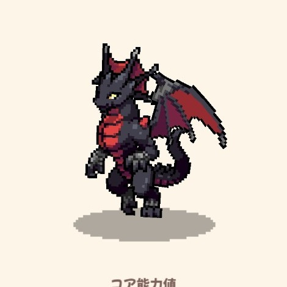
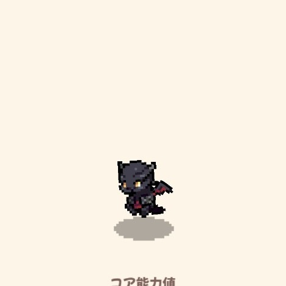
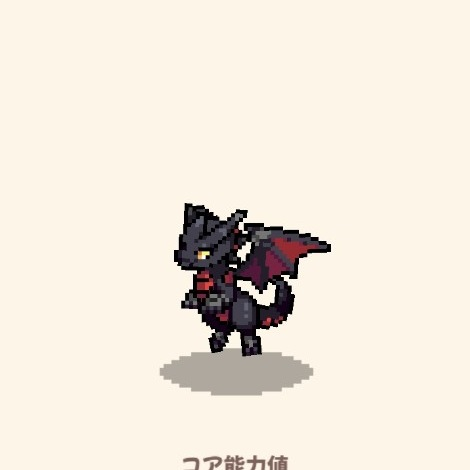

BASIC DATA
基本情報
- レア度
- Epic
- 属性
- 風・鋼
- 固有
- 名射手｜スキル命中率が1.3倍
- 入手方法
- 交配
- 交配条件
- 風属性・鋼属性を含む
- 交配時間
- 4時間2分15秒 実測
- 孵化時間
- 4時間15分 参考値

ゲーム内スクリーンショットDRAGON FILE 001
高い攻撃と速度を持ち、固有アビリティ「名射手」でスキル命中を安定させる物理型ドラゴン。
BASIC DATA
SKILLS
風属性で攻撃し、エネルギーを1回復する。
30％の確率で自身のクリティカル確率が1段階上昇。戦闘ごとに1回。
GROWTH FORMS
Lv.5・Lv.15・Lv.50のゲーム内表示。


MEASURED STATS
| 段階 | HP | 攻撃 | 防御 | 魔力 | 抵抗 | 速度 |
|---|---|---|---|---|---|---|
| ★1 Lv.50 | 1,008 | 1,093 | 758 | 1,008 | 758 | 923 |
| ★5 Lv.5 | 508 | 549 | 388 | 508 | 388 | 468 |
| ★5 Lv.15 | 660 | 714 | 501 | 660 | 501 | 605 |
| ★5 Lv.50 | 1,094 | 1,186 | 821 | 1,094 | 821 | 1,001 |
PROJECT D REVIEW
交配で重ねられるEpic。攻撃と速度が高く、名射手により命中不安を抑えやすい。★5完成までの交配成功率と総日数は継続調査。